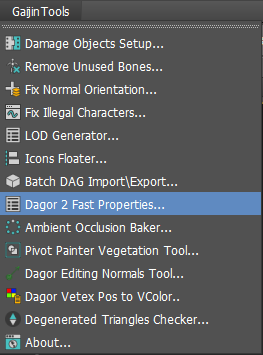

Dagor Fast Editor User Properties
Installation
Install the script following the provided instructions.
Important
This script requires 3ds Max 2012 or newer version to run.
Accessing the Fast Editor User Properties
Press
Ctrl+Shiftto open the floating panel:
Closing the panel by pressing X disables this editor completely. To return the toggle behavior, reopen the editor from the Gaijin Tools > Dagor Fast Properties…

Using the Fast Editor User Properties
The panel buttons shown in the picture above perform several key functions:
Copy Obj User Defined: copies the User-Defined Properties of the first selected object to the system clipboard as plain text.
Note
The other toolbar buttons apply to all selected objects.
Note
Fast access is limited to the first 20 selected objects to prevent performance degradation with larger selections.
Paste Obj User Defined: pastes the text from the system clipboard into the Properties of all selected objects.
Clear Obj User Defined: clears the Properties of all selected objects.
Vertex Color ON: enables the display of Vertex Color in the Viewport.
Vertex Color OFF: disables the display of Vertex Color in the Viewport.
The Display Properties on Viewport checkbox allows you to display Properties directly in the Viewport, near the pivot point of each object.
The block of Objects below displays copies of the Properties of the selected objects. Editing the text in this panel will not modify the actual object properties. To make changes, use the Clear and Paste buttons.
The support section at the bottom of the panel provides quick access to the documentation via the Visit to Learning Web Site button. Since you’re already here, you may have found it. For further assistance, contact the tool developer by clicking the Contact with Developer button.